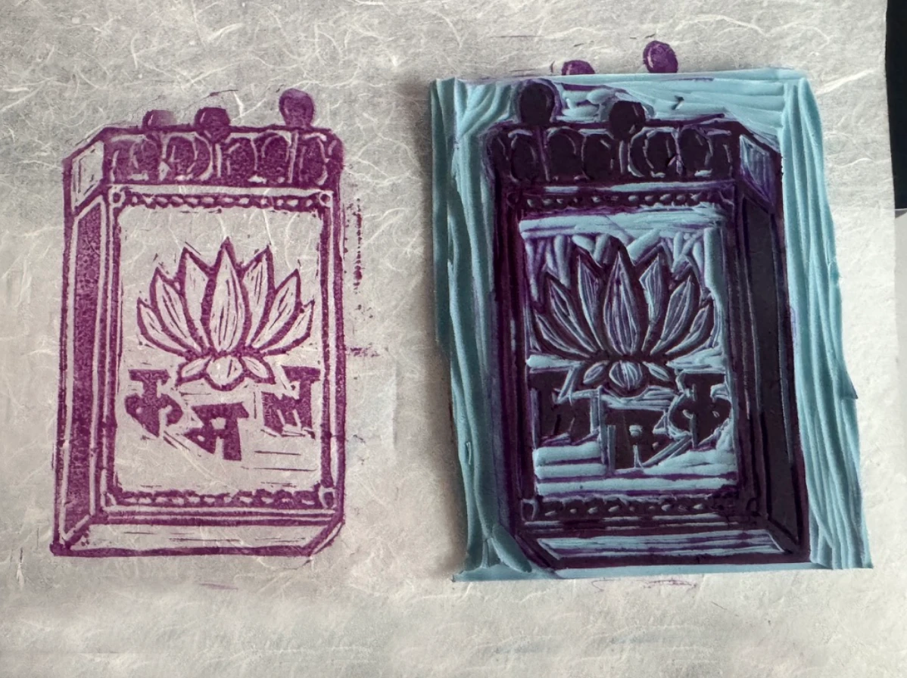
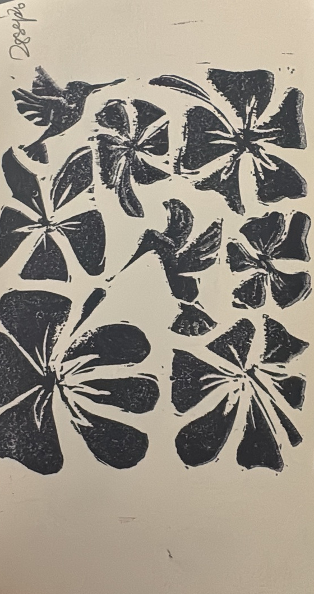
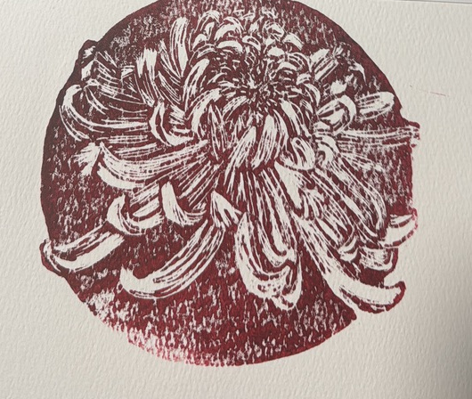

Lino prints
Carved and printed by hand. Photos straightened and cropped, colours as taken.
-

Lotus (कमल)
Purple on fibrous paper, with the inked block beside it.
-

Hummingbirds
Black, printed straight into my sketchbook.
-

Chrysanthemum
Deep red on textured watercolour paper.